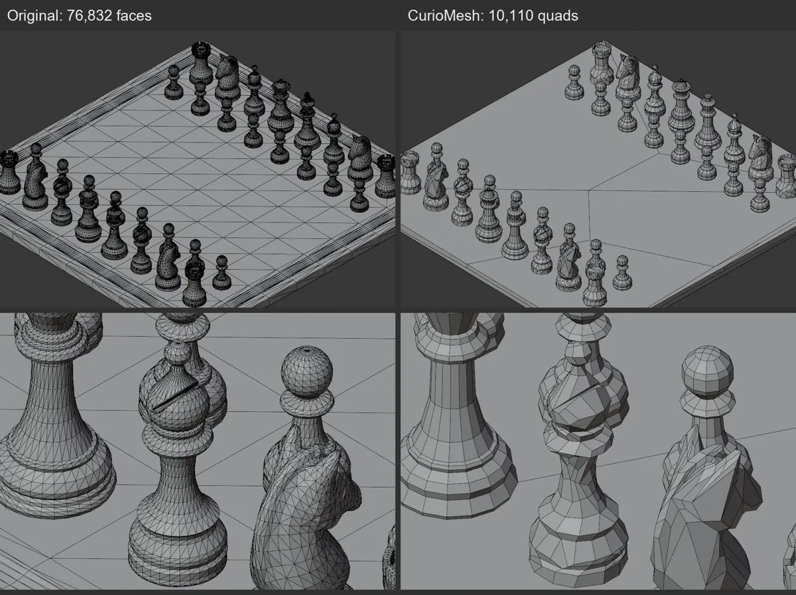
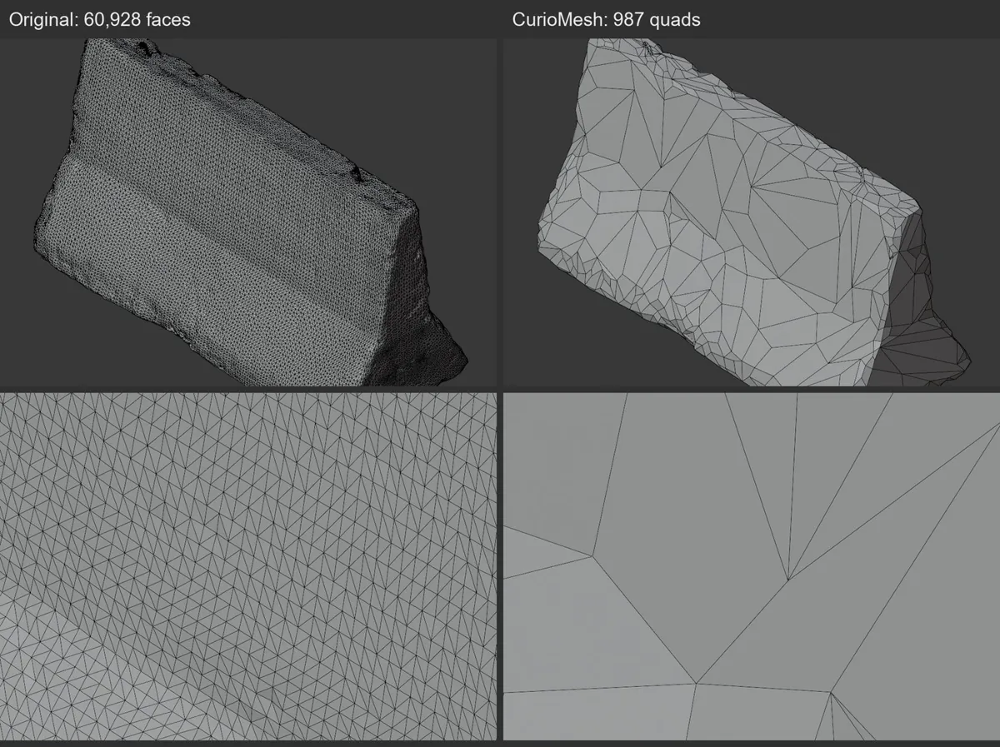
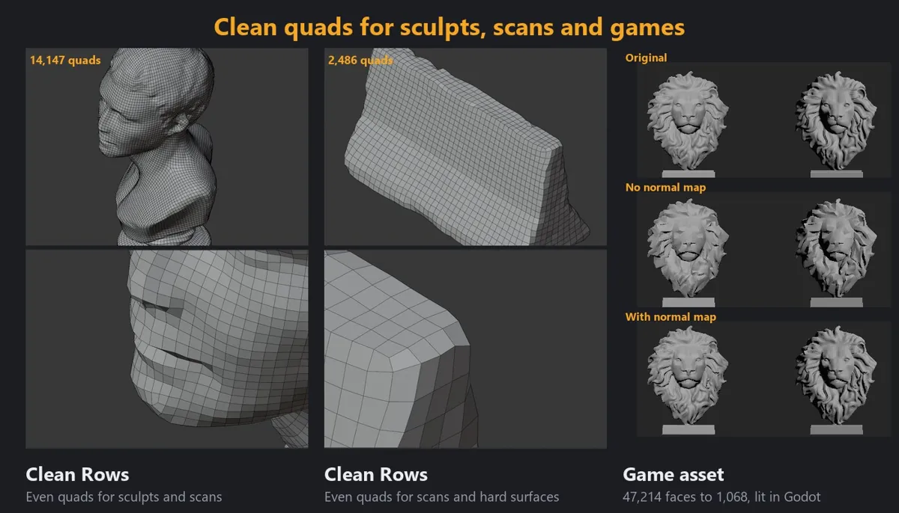

CurioMesh
A free, open-source (GPLv3) Blender add-on that retopologises dense sculpts and photogrammetry scans into all-quad meshes, part by part, with a camera check on every result. Python for the Blender side, Rust for the slow steps.
- 46★ on GitHub
- 17 releases
- 47 min → ~5 min on a 1.26M-face scan
- ~279 tests
- Blender 3.6–5.2 · Win / Linux / macOS
The problem
Artists get dense meshes from sculpts, scans and high-poly game assets, and need a clean low-poly all-quad version. Automatic remeshers redo the whole object and give you little way to tell whether the result still looks like the original. Big scans make it worse: a run can take most of an hour.
CurioMesh works one loose part at a time, measures every result against the source, and lets the artist redo only the part that still looks wrong. It runs on the user's PC and uploads nothing.
How it works
Per-part retopology
You say what the mesh is for (game asset, animation, subdivision, scan cleanup and so on), press one button, and the add-on reduces the model one loose part at a time. Nothing in the scene changes until Apply. The original is kept as an immutable reference, and work happens on separate objects.
Camera check from six sides
The add-on renders the original and the result from six sides and measures View changed: the share of the picture that differs. The camera also chooses between layouts per part, keeps a layout only where the view holds, and undoes a repair it dislikes. The default Game Asset setting allows 6% of the view to change.
Python and Rust, and why
The Blender integration, panel and orchestration are Python, because that is what Blender exposes. The slow steps (camera pictures, pairing, quad closing, reduction, crossing checks, fitting) live in a Rust crate under native/ that uses all CPU cores and no GPU. In 0.6.0 the topology checks and quad closing got about 30x faster, and a 1.26M-face scan went from 47 to about 5 minutes with Blender staying usable. Every zip ships the compiled core for Windows, Linux and macOS, and an automatic Python fallback keeps the add-on working where the native core cannot load. The Blender extensions site allows no compiled code, so that listing is the Python-only build.
CI that checks Rust against the Python reference
Two jobs run on every push. The Python job runs ruff and the unit tests. The native job builds the Rust core with cargo, then runs equivalence tests that compare it with the Python implementation. The Python code is the reference, so a faster Rust path cannot quietly change results. Tests that need Blender itself exist but are not run in CI, so the badge does not cover the add-on inside Blender.
Results
Every example ran the real add-on on a free CC0 Poly Haven model at default Game Asset settings (Keep Detail, Detail 6%), on Blender 5.2.3 LTS. Original on the left, result on the right.




On the large scans, a 1,260,423-face coast-rocks scan became 434,995 quads in 5 minutes, and a 1,537,926-face cliff scan became 362,292 quads in 7 minutes, on a PC that was also doing other work. Both stayed all quads. The README lists all 20 models and states its own limits: quads can look slanted on smooth surfaces, fine ornaments go jagged at high reduction, and big scans take minutes.
Engineering decisions
These are design choices recorded in the repository's docs (docs/ALGORITHM.md, docs/ORIGINALITY.md, the README).
- Hard gates, soft targets. Topology and validity are hard gates; face count is a soft target. Geometric fidelity, face count, quad shape and topology repair conflict, and the design makes that conflict visible instead of hiding it in one score.
- Same answer from both languages.
pairing.rsreproduces Python's MT19937 random generator so the Rust and Python paths pick the same pairs, which is what lets the CI equivalence tests compare them directly. - Call Blender's remeshers, do not bundle them. QuadriFlow, Voxel Remesh, Decimate and Multires are driven through Blender's own operators. No code from other retopology tools is included, and each module is mapped to its source paper or marked as own design.
- A metric with a stated meaning. View changed is not a quality score and says nothing about quad tidiness, so the panel shows it next to a Tidiness score and a Loop Quality score rather than treating it as the verdict.
How it was built
AI coding agents (Claude, Codex) write most of the code; I spec, review, test and measure it. The commit history shows this plainly, with co-author trailers on most recent commits. My part is the design, the choice of what to measure, accepting each release against the numbers above, and the written limits.